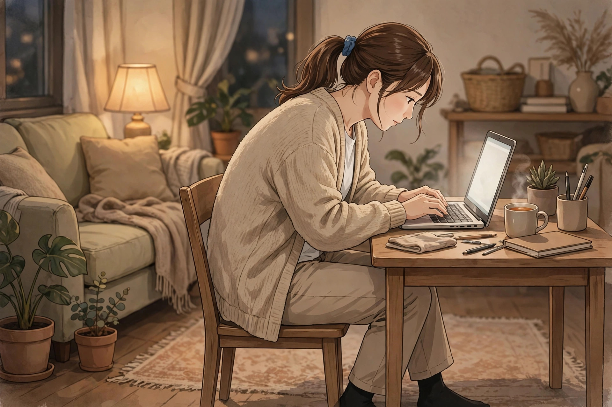

背中が丸くなる理由と、姿勢を戻す方向への考え方を解説します
猫背は、背骨のカーブが強くなり、頭と肩が前に出た姿勢です。「気をつけているのに戻ってしまう」背景には、筋肉のバランスと日常の姿勢の積み重ねがあります。
猫背は見た目の印象だけでなく、肩こりや首の重さ、息の浅さともつながる姿勢です。叱られて背筋を伸ばす、といった根性の問題ではなく、体がその姿勢を「楽な位置」として覚えてしまった状態と考える方が実態に合っています。このページでは、猫背が作られる仕組み、セルフチェックの方法、日常で戻す方向へのポイントを順に解説します。
背骨は本来、横から見るとゆるやかなS字のカーブを描いています。首は前に、胸のあたり（胸椎）は後ろに、腰は前にというカーブの組み合わせで、頭の重さを分散しながら支えています。猫背はこのうち胸椎の後ろへのカーブが強くなり、背中全体が丸く見える状態です。
背中が丸くなると、頭の位置は体の中心より前へずれます。頭は体重のおよそ1割ほどの重さがあるため、前に出るほど首や肩まわりの筋肉が支える負担は大きくなります。肩が内側へ巻き込む「巻き肩」も、胸の前の筋肉が縮んだ結果として一緒に起こりやすい変化です。
猫背の直接のきっかけは、骨盤の傾きと連動していることが少なくありません。椅子に浅く座って背中を丸める座り方（骨盤が後ろへ傾いた座り方）を続けると、胸椎のカーブはそのまま強くなります。立つ姿勢でも、骨盤が後傾していると背中は丸くなりやすく、頭は前に出ます。
もう一つの背景は、時間です。丸い姿勢そのものは、短時間なら体にとって楽な姿勢です。問題は、その姿勢のまま1日の大半を過ごすことで、筋肉と関節がその形に合わせて適応してしまうことです。縮んだ筋肉は短い長さに慣れ、伸ばされた筋肉は力を出しにくい状態に慣れていきます。
猫背では、体の前側と後ろ側で、筋肉の状態が対照的になります。
胸の前の筋肉（大胸筋・小胸筋）は、肩を前へ引く働きをします。デスクワークやスマートフォンの操作で腕を前に出す姿勢が続くと、この筋肉は縮んだ位置で硬くなり、肩を前へ留める力になります。首の前側の筋肉も、頭が前に出る姿勢で緊張しやすくなります。
肩甲骨の内側の筋肉や、背中を起こす筋肉は、丸い姿勢では引き伸ばされた状態が続きます。伸ばされた筋肉は力を発揮しにくく、「背筋を伸ばそうとしてもすぐ疲れる」感覚の背景になります。姿勢を戻す方向へ進めるには、前側の縮みをゆるめることと、後ろ側が働きやすい状態を作ることの両方が必要です。
猫背が最も作られやすいのは、座って作業をしている時間です。画面に集中するほど体は前へ傾き、背中の丸みは強くなります（図1）。横から見ると、耳が肩より前に出て、背中のラインが一つの大きな弧を描く形になります。

図1：デスクで背中を丸めて作業する姿勢。頭が前に出て、肩が内側へ巻き込まれています。
この姿勢が1日数時間、週に5日、年単位で続くと、体はこの形を標準として覚えます。休日に背筋を伸ばしても戻ってしまうのは、意志の弱さではなく、筋肉の長さと働き方がその姿勢に合わせて適応しているためです。
見た目では、背中の丸みによって実年齢より老けた印象になりやすく、デコルテのラインが詰まって見えます。肩が前に巻き込むとバストの位置も下がって見え、服のシルエットが変わります。下腹が前に出て見えることも、骨盤の後傾と連動した猫背で起こりやすい変化です。
体感では、肩こりや首の重さ、背中の張りが代表的です。胸が縮んだ姿勢では息を吸うときに胸郭が広がりにくく、息が浅くなりやすいことも知られています。夕方になると頭が重く感じる、集中が続かないといった感覚の背景に、姿勢の崩れが関わっていることもあります。
写真に写った自分の姿勢に驚いた、という声もよく聞きます。正面の鏡では気づきにくい背中の丸みも、横からの写真でははっきり分かります。結婚式や発表の場など、姿勢が印象を決める場面を前にして来店される方も少なくありません。見た目の変化は、姿勢のケアを始めるきっかけとして大きなものです。
チェックは目安です。当てはまる項目があっても、それだけで体の状態が決まるわけではありません。当サロンでは施術前に、壁立ちの確認と横からのラインの見方を含めて、姿勢の状態を一緒に確認しています。
姿勢は日常の積み重ねで作られるため、戻す方向への働きかけも日常の中に置くことが近道です。座る時間が長い方は、椅子に深く座って骨盤を立てる座り方を意識し、1時間に一度は立ち上がって胸を開く動きを入れてください。胸の前のストレッチ（壁に手をついて体をひねる動き）は、縮んだ前側をゆるめる基本のケアです。
背中側の筋肉には、肩甲骨を寄せる小さな動きが役立ちます。両肘を後ろへ引いて肩甲骨同士を近づける動きを、仕事の合間に数回繰り返すだけでも、後ろ側に「働くきっかけ」を与えられます。強い運動である必要はなく、毎日続けられる小ささの方が姿勢には効いてきます。
当サロンの美容整体では、まず姿勢の状態を確認し、縮んでいる前側（胸・首の前）をゆるめ、背中側の筋肉が働きやすい状態を作る順番で進めます。骨盤の傾きが関係している場合は、土台である骨盤まわりから整えます。施術後に姿勢が軽く感じるのは、支える筋肉の負担配分が変わるためです。
施術は姿勢をその場で変える時間であると同時に、ご自宅で続けやすいセルフケアを確認する時間でもあります。姿勢は施術だけで完結するものではなく、日常の座り方・立ち方とセットで考えることが、戻りにくい姿勢への近道です。
猫背と呼ばれる姿勢には、大きく2つのタイプがあります。一つは、骨盤が後ろへ傾き、背中全体が丸くなるタイプです。座る時間の長い生活で作られやすく、お尻が下がり、下腹が前に出て見える特徴があります。もう一つは、背中自体の丸みは強くないものの、頭だけが前に出ているタイプです。スマートフォンや画面を見る姿勢が引き金になりやすく、首や肩の負担が中心になります。
タイプによって、優先して整える場所は変わります。骨盤後傾タイプでは土台である骨盤まわりから、頭部前出タイプでは胸の前の縮みと首まわりから、というように順番が変わります。「猫背だから」と一括りにせず、どのタイプかを見分けることが、ケアの出発点です。
猫背の方に肩こりが多いのは、頭の位置が関係しています。頭が前に出るほど、首の後ろ側と肩まわりの筋肉は、頭を落とさないように引っ張り続ける働きを求められます。デスクワークの間じゅうこの状態が続くため、夕方には肩の重さや頭の重さとして感じられます。
肩だけをもんでも楽になるのは一時的で、姿勢が同じなら負担は同じ場所へ戻ります。肩こりのケアを姿勢から考えることは、遠回りのようでいて、負担の元を減らす方向の取り組みです。当サロンでも、肩こりのご相談では姿勢の確認を欠かしません。
猫背を戻す方向へ進めるとき、いきなり「胸を張る」ことから始めると、腰を反らせて代償する形になりやすく、腰の張りを招くことがあります。おすすめの順番は、土台から上へ、です。まず骨盤の傾きを整え、次に背中の丸みをゆるめ、最後に胸と肩の位置を合わせていきます。
この順番は施術でも同じです。下の土台が整うと、その上の部位は少ない力で位置を変えられます。セルフケアでも、骨盤を立てて座る→肩甲骨を寄せる→胸を開く、という流れを意識すると、無理のない形で姿勢を作れます。
猫背の作られ方は年代でも変わります。20〜30代では、スマートフォンとデスクワークによる頭の前出タイプが中心です。筋肉の回復も早い年代のため、習慣の見直しが姿勢に反映されやすい時期でもあります。40〜50代では、筋肉量の低下と長年の姿勢の積み重なりが重なり、背中の丸みが固定されやすくなります。お尻や背中の筋肉の働きが落ちることで、骨盤後傾タイプが増えてきます。
どの年代でも共通するのは、姿勢は「今の生活の合計」で作られているということです。年代のせいと片づけず、座る時間の長さ、画面との距離、歩く量といった、今の条件から見直すことが、年代を問わず姿勢を変える出発点になります。
60代以降では、背中を起こす筋肉の働きがさらに大切になります。転倒を防ぐ意味でも、姿勢を支える力は生活の土台です。強い運動でなくても、椅子からの立ち座りをゆっくり繰り返す、背筋を伸ばして歩く時間を増やすといった日常の動きが、背中側の筋肉を使う機会になります。
スマートフォンを見る姿勢も見直したいポイントです。画面を目線の高さまで持ち上げる、長く見るときは壁にもたれて背中を預ける、といった小さな工夫だけでも、頭の前出の角度は浅くなります。1回あたりの差は小さくても、毎日の積み重ねとしては大きな差になります。
Q. 猫背は、姿勢を意識するだけで戻りますか？
A. 意識して背筋を伸ばすことは第一歩ですが、胸の前の筋肉の縮みや背中側の筋肉の弱さが残っていると、意識を外したときに元の姿勢へ戻りやすくなります。体の状態を整えることと、日常の姿勢の習慣を組み合わせることが大切です。
Q. 猫背と巻き肩は違うものですか？
A. 猫背は背骨全体が丸くなる姿勢、巻き肩は肩が前に巻き込まれる状態を指します。胸の前の筋肉が縮むという背景が共通するため、一緒に起こることが多く、ケアも連動して考えることがほとんどです。
Q. 子どもの頃からの猫背でも変わりますか？
A. 長年の姿勢でも、筋肉のバランスと日常の使い方を見直すことで、姿勢の印象は変わっていきます。骨そのものの形ではなく筋肉と習慣の問題であることが多いため、年齢にかかわらず取り組む意味があります。
Q. 施術はどのくらいの間隔で受けるのが目安ですか？
A. 体の状態と生活習慣によって変わるため、一律の間隔はお伝えしていません。姿勢が戻りやすい最初の時期は間隔を詰め、安定してきたら広げていく方が多いです。初回の施術時に、状態を見ながら目安をご提案します。
解説と施術は、施術歴30年・鍼灸師の資格を持つ平賀建人が担当します。登録販売者・アロマセラピスト・パーソナルトレーナーの知識も活かし、体の仕組みをできるだけ分かりやすくお伝えすることを心がけています。
この記事は専門解説シリーズの1本です。料金やご予約についてはトップページをご覧ください。
姿勢と服の見え方
姿勢が整ってくると、同じ服でも見え方が変わってきます。姉妹サイト「POSTURE & STYLE」では、40代からの体型カバーを考えた服選びと、服が似合う体づくりのトレーニングを紹介しています。巻き肩・猫背が気になる方は、肩甲骨まわりの5分ケア（女性）もあわせてどうぞ。